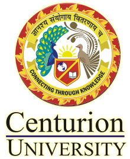
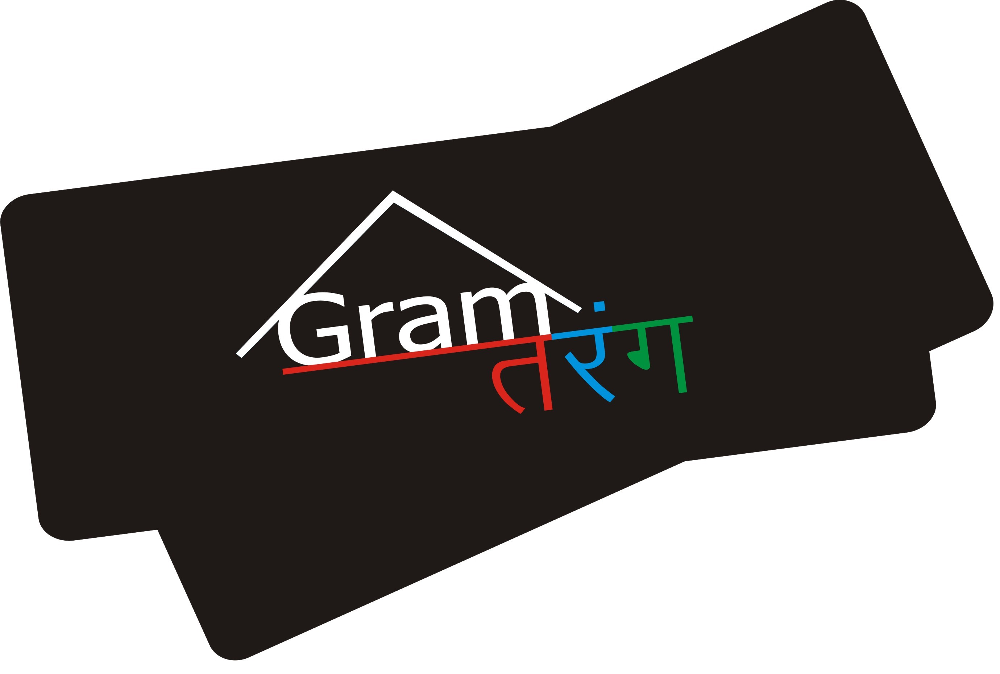

ABOUT CUTM
The journey of Centurion University of Technology and Management
(CUTM) began in the year 2005 by a group of ambitious academics
with aspirations to provide
high quality education both nationally and
internationally.
The first step in this direction was to take over an
ailing engineering Institute, the Jagannath Institute for Technology
and Management (JITM) in one of the most
challenging tribal districts
of Odisha and one which was considered
to be a left-wing extremist affected area.
Subsequently, JITM was transformed into Centurion University of Technology
and Management in August 2010,
through an act of Odisha Legislative Assembly.
OUR VISION
Provision of quality ,globally accredited academic programmes in
technology and management . facilitating improved market access to goods and
financial services to the target population. promotion of lighthouse project
interventions in the target area.
OUR MISSION
A globally accredited of human resources center of excellence catalyzing
"sustainable livelihood "in the "less developed markets across the globe "

GRAM TARANG
Gram Tarang Employability Training Services Pvt. Ltd. is a social entrepreneurial initiative in skill training working in largely underdeveloped regions of the country and is committed & towards providing young people with high quality vocational education & skill training, relevant& recognized certifications resulting in meaningful employment & successful careers in the organized sector.